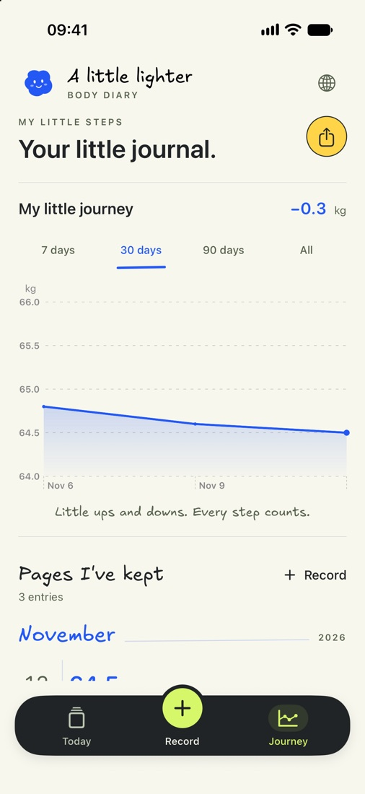
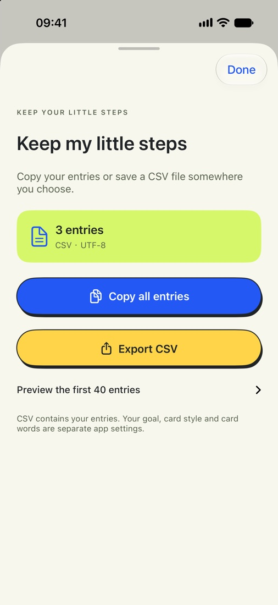

How to Export Your Weight Log to CSV on iPhone
Export your weight log from A Little Lighter to Files on iPhone, then open the CSV in a spreadsheet. The export includes dates, weights, moods, and notes.
Save your weight log to Files
- Open Journey and tap the share icon in the upper right. This opens Keep my little steps.
- Tap Export CSV. In the iPhone share sheet, choose Save to Files and pick a folder.
- Open the file in Numbers, Excel, or another spreadsheet app that reads CSV.


For a quick copy, tap Copy all entries to copy the CSV text to your clipboard. Preview the first 40 entries shows a sample of your log. The copy and the file include your full history.
What the CSV looks like
Each row contains the date, weight in kilograms, mood, and note. Here are three fictional entries in the English export format.
Date,Weight (kg),Mood,Note
"2026-11-06","64.8","Okay","First entry"
"2026-11-09","64.6","Good","A walk after dinner"
"2026-11-12","64.5","Tired","Early night"Keep a copy before deleting the app or switching phones. The CSV is for viewing or keeping your entries. The app currently supports CSV export only.